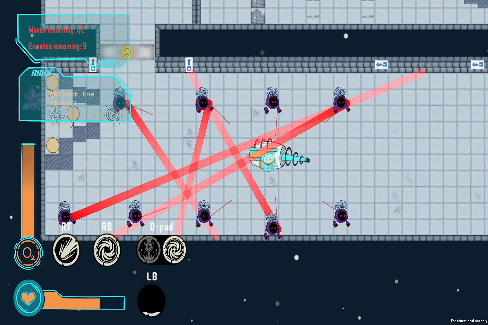
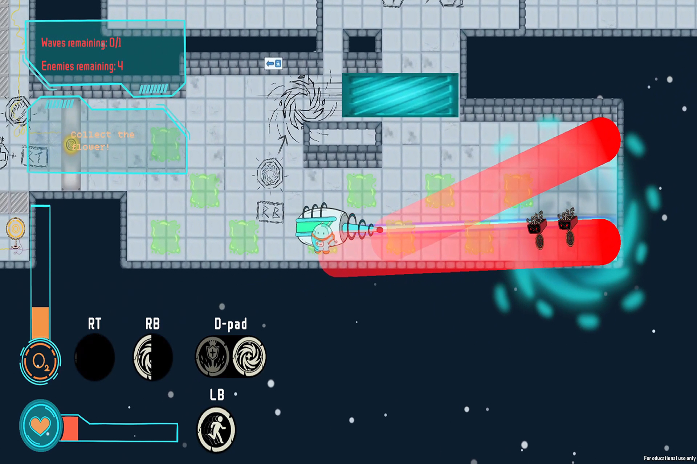
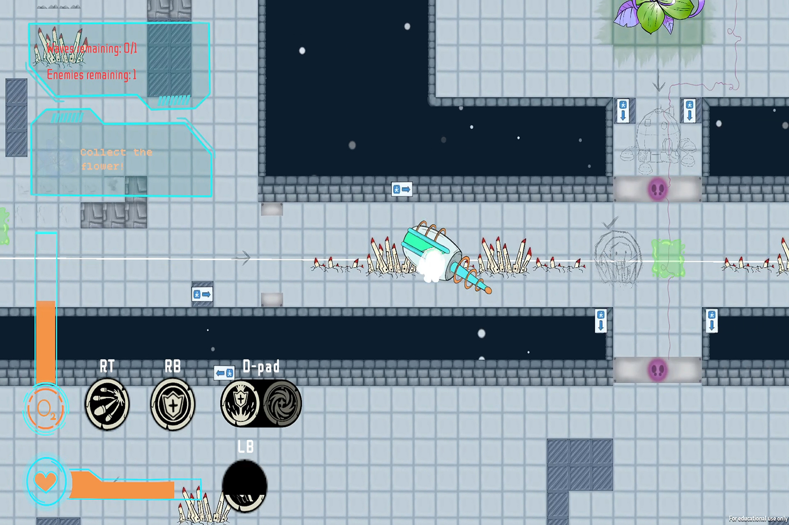
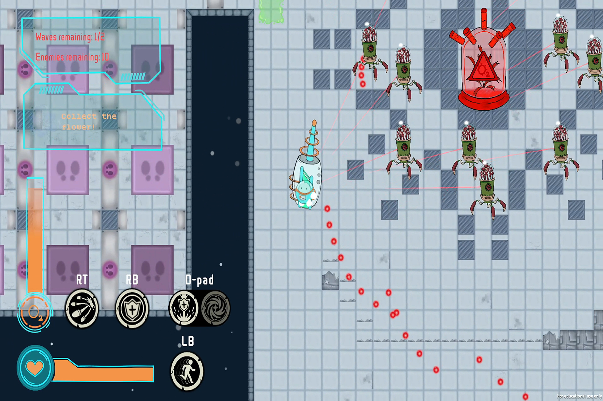

Petalnaut
团队俯视角射击解谜 · 第 1 关与最终关设计
项目速览
项目性质校内团队项目
角色关卡设计师
负责范围第 1 关 / 最终关
类型俯视角射击解谜
我的核心贡献
- 设计第 1 关和最终关，组织机制教学与综合考验。
- 围绕角色能力建立可重复组合的谜题块。
- 复用现有机制与代码设计新敌人与陷阱。
项目介绍
Petalnaut 是一个校内团队合作开发的俯视角射击解谜项目，玩法结合经典 2D《塞尔达》式房间解谜与《挺进地牢》式俯视角射击。我担任关卡设计师，负责第 1 关与最终关：第 1 关逐步建立角色能力、敌人和环境机关的基础规则；最终关则要求玩家把此前掌握的机制进行混合运用，在战斗压力下完成更复杂的空间判断。
我的设计方法是先把角色的不同能力拆解为可复用的“谜题块”，再通过敌人位置、危险区域、能力使用顺序和房间结构的重新组合，构建新的谜题与战斗节奏。这样既能保持规则一致，又能让相同机制在不同语境下产生新的决策。
我的工作
- 第 1 关：负责核心机制的首次教学，让玩家在低压力环境中理解角色能力、敌人攻击方式与房间目标。
- 最终关：把前期已经学习的机制重新组合，在同一流程中加入战斗、解谜与能力切换，形成综合考验。
- 谜题块设计：围绕主角的不同能力设计独立谜题模块，再通过模块的排列、叠加和顺序变化扩展关卡解法。
- 低成本内容扩展：利用团队已经完成的机制与代码组合出新的敌人与陷阱，减少额外程序需求并提高既有系统的利用率。
设计分析
从单一能力建立谜题块
每个谜题块首先围绕一种明确能力建立基础问题，例如穿越危险区域、改变位置、处理远程威胁或在限制条件下到达目标。单个模块只强调少量规则，使玩家能够理解自己的操作为什么成功或失败。
从教学过渡到混合运用
第 1 关负责让玩家逐项认识能力、敌人和环境规则；最终关不再重复单一教学，而是把多个谜题块放入同一房间或连续流程。玩家需要判断处理顺序，并在射击压力、范围攻击和地形危险之间切换能力。
复用系统扩展关卡内容
我优先思考现有机制还能形成哪些新组合，再决定是否需要新的程序功能。通过调整攻击范围、移动方式、敌人配置和环境条件，我能够利用现有代码构成新的敌人与陷阱，让团队把开发资源集中在更关键的系统上。
项目画廊
项目海报

游戏截图






